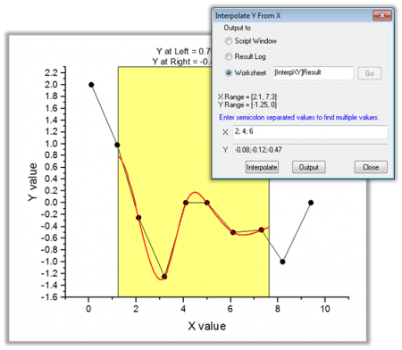
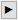

補間ガジェット
ガジェット：補間
概要
補間ガジェットはROI(Region of Interest)範囲のすばやい補間を行います。
- 
このガジェットで、次のことができます。
- 線形、3次スプラインまたは3次Bスプライン法を使用して矩形領域上のデータ点を簡単に補間
- 任意のX値から補間されたY値を素早く検索
- 補間値をスクリプトウィンドウや結果ログ、特定のワークシートに出力
補間ガジェットを使うには
このツールを使うには、グラフがアクティブなときに、メニューからガジェット：補間を選びます。
ダイアログ設定
このダイアログは、メニューからガジェット：補間を選ぶか、ROIフライアウトメニューから設定を選ぶと開くことができます。
| ROIボックス
|
Xのスケール
- ROIのXデータ範囲を指定します。
- 開始
- Xスケールの開始値を入力します。
- 終了
- Xスケールの終了値を入力します。
- 固定（ROIによる変動を防止）
- ROIボックス移動時にて再スケールしないように固定します。
ツール名を表示する
- ROIの上部にツールの名前を表示するかどうか指定します。
塗り色
- ROIボックスの塗り色を指定します。
補間線の色
- 補間線の色を指定します。
補間線の幅
- 補間線の幅を指定します。
|
| ROIボックス上中央への表示
|
ROIボックスの上部に表示する値を選択します。
- 左のY
- ROIの左端に対応するY値
- 右のY
- ROIの右端に対応するY値
- 特定XでのY
- X 編集ボックスで指定するX値に対応するY値
- X
- この編集ボックスは、特定XでのYチェックボックスが選択されているときにのみ編集できます。
|
| 補間/補外オプション
|
手法
- 補間/補外の手法を指定します。以下のオプションがあります。
- 線形
- 線形補間は、隣接する2つのデータポイント間に線を作成することにより、データポイントを推定する高速な方法です。
- 3次スプライン
- 入力データを指定された数に分割し、各セグメントを3次多項式で近似します。各3次関数の2次導関数はゼロに等しく設定されます。これらの境界条件が満たされると、関数全体は区分的に構成できます。
- 3次B-スプライン
- この手法も入力データを分割します。各セグメントは個別にベジエスプラインでフィットされます。
- Akimaスプライン
- この方法は複数の多項式から作成された区分関数を元にしています。akima補間は外れ値がある場合も出力が安定しています。
- アルゴリズムはこちらを参照してください。
ポイント数
- 補間/補外のポイント数を指定します。
境界
- 方法で3次スプラインを選択した場合に利用可能です。以下のオプションがあります。
- 自然
- 2次導関数は両端で0です。
- Not-A-Knot条件
- 3次導関数は、2番目と最後の2番目のポイントで連続です。
スムージング因子
- 方法で3次B-スプラインが選択されている時のみ選択できます。非負のパラメータは、3次Bスプラインで補間された曲線の滑らかさを指定します。因子はスムージングと実際のデータへの忠実度のバランスをコントロールする際に役立ちます。大きな値にすると、より滑らかな曲線になります。
フィット制限範囲
- 補間の曲線境界を指定します。
- 四角領域に補間
- ROI の端まで補間します。 ROI範囲が元のデータ範囲より大きい場合、元データの端まで補間します。
- 四角形領域の補間/補外
- 元データの範囲を無視して、ROI端点まで補間/補外を行います。
- データポイント
- ROI で囲まれた指定されたデータポイント間を補間します。
- 軸全体に補間/補外
- 入力グラフのX軸のスケール範囲全体に対して補間/補外をかけます。元のデータ範囲は関係ありません。
- カスタム
- 左と右の値で指定した値まで補間/補外を行います。
|
| 出力先
|
出力結果のワークシートを指定します。
- 結果は、デフォルトで[%H-Interpolate]Resultに出力されますが、ほかのブックやシートを指定することもできます（ここで、%Hはソースグラフのショートネームです）。指定したブックやシートがない場合、作成して出力します。
- もう一つの方法として、結果ワークシート名の右側にあるフライアウトボタンをクリックして、入力ブック内のシートを選択します。これにより、編集ボックスには[<input>]Resultが入力されます。結果は、元データのワークシートResultに出力されます。
|
フライアウトメニュー
ROIボックスの右上角にある三角形のボタン をクリックして、フライアウトメニューを開きます。メニューは以下の通りです。
をクリックして、フライアウトメニューを開きます。メニューは以下の通りです。
| 新しい出力
|
指定したワークシートに結果を出力します。
|
| すべての曲線で出力(N)
|
現在のレイヤのすべての曲線の結果を指定されたワークシートに出力します (空でなければ、結果を追加します)。
|
| すべてのレイヤで出力(L)
|
現在のグラフ内にある全レイヤの全ての曲線の結果を、指定したワークシートに出力します（空でなければ、結果を追加します）。
|
| レポートシートに行く
|
レポートワークシートをアクティブにします。
|
| データ変更
|
ソースデータセットを選択します。これはグラフ上に複数の曲線がある場合のみ使用できます。
- デフォルトで自動モードになっています。 自動が有効になっている場合、プロットの選択は、グラフウィンドウまたはオブジェクトマネージャでプロットをクリックすることによって可能です。 Origin 2019より前のバージョンでは、自動はサポートしていないので、変更する場合はフライアウトメニューを使います。
- 各プロットにチェックを付けて、そのプロットを選択します。
- 選択...または、詳細...をクリックするとプロットを選択ダイアログが開きます。
|
| プロット群の最大範囲に拡大する
|
ROI範囲を全プロット範囲に拡大します。
|
| ROI位置の固定
|
ROIの位置を固定します。
|
| X/Yの補間
|
XからYを補間ダイアログを開きます。 複数のX値を入力でき、それぞれに対応する補間されたY値を出力します。
|
| テーマに名前を付けて保存
|
設定をテーマとして保存します。
|
| <デフォルト>として保存
|
設定をデフォルトテーマとして保存します。
|
| テーマのロード
|
テーマファイルから設定をロードします。
|
| 設定...
|
補間 設定ダイアログを開きます。
|